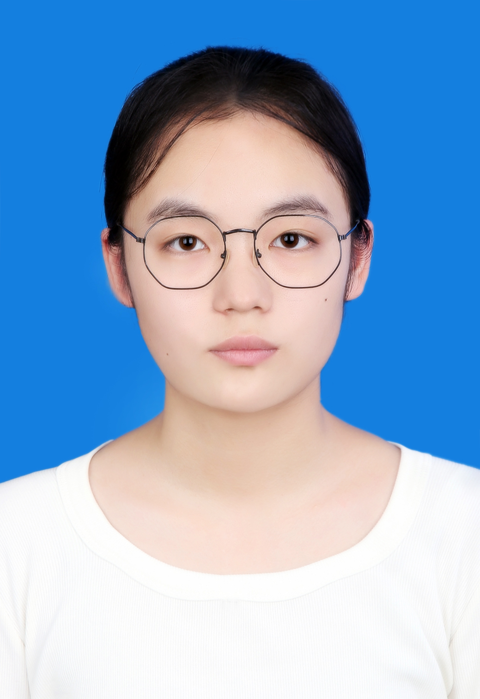

个人简历
基本信息
<
个人简历

姓 名：高雅楠
性 别：女
民 族：汉族
出生年月：2006年3月24日
政治面貌：共青团员
联系电话：19051519272
电子邮箱：198879332@qq.com
毕业院校：淮阴师范学院
所学专业：广播电视学
毕业时间：2028年
教育背景
淮阴师范学院 | 广播电视学专业 | 本科 2024年09月 — 2028年06月 主修课程：新闻学概论、广播电视编导、播音主持艺术、新闻采访与写作、新媒体运营、影视后期剪辑、传播学概论等。 在校认真学习专业知识，熟练掌握文案撰写、视频拍摄剪辑、节目策划、新媒体内容创作等专业技能。 积极参与校园融媒体实践、文艺活动策划及短视频创作项目，具备良好的文案功底与镜头表达能力。
实践经历
链接2
校园经历
技能与自我评价
本人性格开朗稳重，做事认真负责、踏实自律，具备良好的沟通表达能力与团队协作意识。主修广播电视学专业，系统掌握新闻采编、文案撰写、视频拍摄剪辑、节目策划、播音主持等专业技能，熟练运用剪映、PR、PS等剪辑设计软件。 学习上勤奋上进，善于主动思考与总结复盘；实践中勇于尝试短视频创作、活动策划、文稿撰写等相关工作，适应能力强，抗压能力好。对待工作态度严谨细致，执行力强，有较强的责任心和学习接纳新事物的能力，愿意虚心学习、踏实积累，能够快速融入团队并完成各项任务。